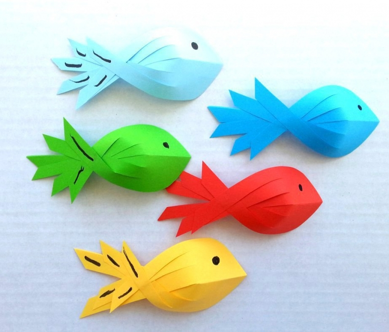
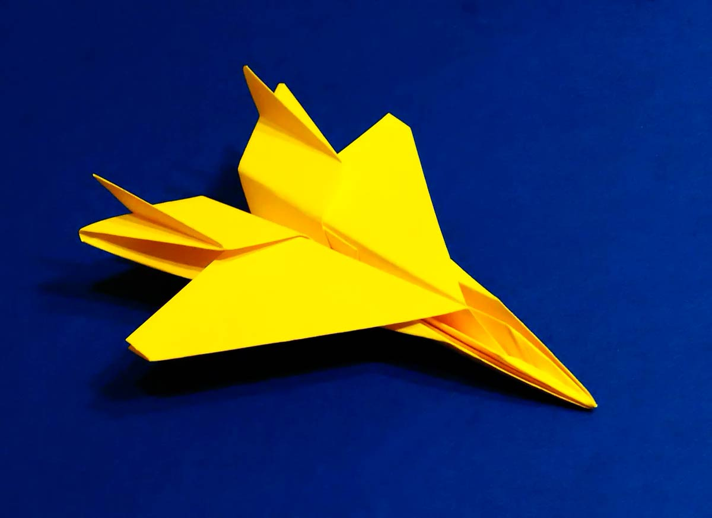
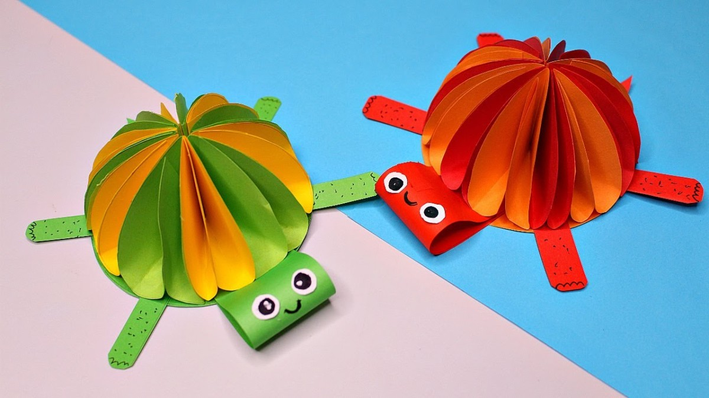

Рыбки оригами
Самые необычные рыбки получаются в технике оригами. Они просты в исполнении, помощь взрослых не нужна. Интересная акула сине-белого цвета получится из синего листа А4 и клея. Цветная бумага должна быть синей с одной стороны, и белой с другой.

Мастер-класс:
1. Синий квадрат складываем пополам, кладём верхушкой вверх.
2. Верхний угол сворачиваем вновь пополам до основания.
3. Поверх сгибаем угол с левой стороны.
4.Теперь раскрываем лист, видны все сгибы. Разрезаем ножницами по горизонтали через весь лист по сгибу. У нас два треугольника.
5. По намеченным сгибам складываем каждый отдельно. Один треугольник должен быть синим, другой белым (свернуть наизнанку).
6.Складываем обе части пополам получаются разные уголки.
7. Соединяем вместе уголки. Внутрь синего вкладываем белый угол. Уже появился корпус акулы. Верх синий, низ белый с верхним плавником, правый небольшой уголок белого цвета поднимаем вверх
Бумажный самолетик

Мастер-класс:
1.Обычный лист цветной бумаги держим цветной стороной к себе. Сверху складываем «гармошкой», пока не получится квадрат.
2. С каждой стороны с боков загибаем углы к внутренней середине.
3. Лист складываем пополам, ещё раз согнуть по бокам к центру. Получаются крылья истребителя. Сделать маленький загиб, ещё раз согнуть, захватывая большую площадь поделки.
4.Часть самолёта, что выступает сгибаем в обе стороны. Потом по сгибам спрятать хвост самолёта. Когда развернём самолёт хвост будет выступать.
5. С 2-х сторон крыльев сделать сгибы вверх.
Черепашки на пляже

Нам понадобятся:
картон;
цветная бумага;
готовые глазки;
ракушки;
ножницы;
клей.
Мастер-класс
1.На картонку наклеить голубой лист, сделать полукругом это море. Остальная часть жёлтая это песок.
2. Зелёный круг вырезаем для основания черепашки. На этот круг клеем 4 ноги и хвостик черепашки.
3. На голубую часть наклеить заготовку черепахи в центре моря.
4. Цветную бумагу нарезать длинными полосками для панциря. Заранее прикинуть, чтобы разноцветные полосы лежали объёмно полукругом. Концы подвернуть и приклеить к основе друг на друга.
5. Вырезаем маленький зелёный круг голову, к ней крепим большие глаза и ротик.
6. Диаметром не больше головы делаем из зелёной бумаги «гармошку». Её фиксируем к голове, чтобы она качалась.
7. Приклеиваем голову к «гармошке», закрепляем к основе.
Перед черепашкой крепим разные ракушки, морские звёзды.
Бумажная черепаха поражаем яркостью, простотой и эстетикой.